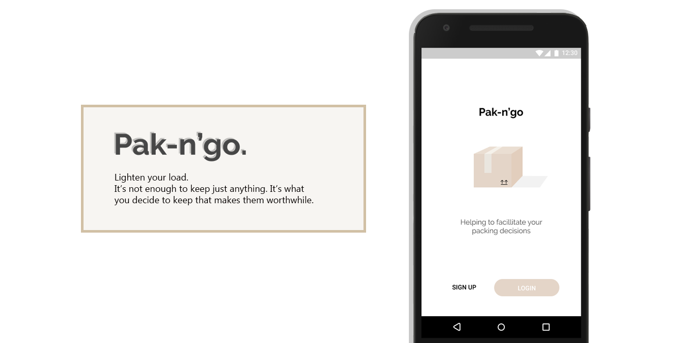
Pak'n-go
Pak'n-go is an app directed to users in the process of packing to moveRole
Co-lead, UX/UI design, web coding, concept development, sketching, wireframing, prototyping, icon design, research/ testingContext
At the end of a 8 week journey, as a team of 5 we were required to propose an application grounded in a Domain of our choiceTeam
Grace Yang, Jiayu Liu, Kritsina Gorobets, Lucio Chen, Patricia Ciocan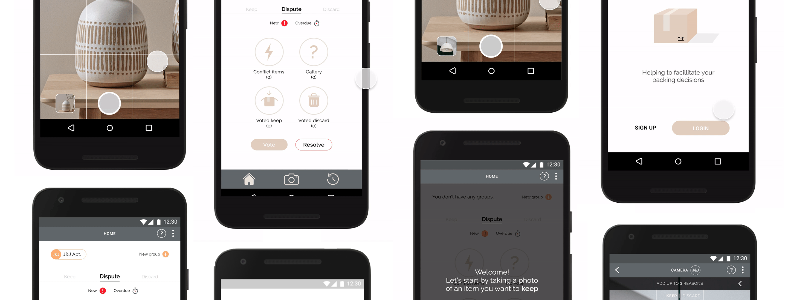
Project Overview
The focus of our project was to identify a specific domain and context to research, propose, prototype, and refine an interactive system. Before landing on our final design for the high-fidelity interactive prototype, we explored and identified various domain such as eco-friendly, traveling, and lifestyle.
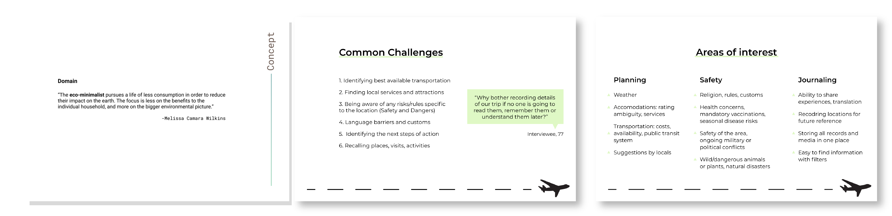
Of these, we chose to focus on ways of living (or lifestyle), analyzing the struggles stakeholders have on lifestyle preferences based on their habits, necessities, as well as budget.
The Opportunity
From our initial ideation (started with environmental aspect):- Eco-Minimalist : The eco-minimalist pursues a life of less consumption in order to reduce their impact on the earth. The focus is less on the benefits to the individual household, and more on the bigger environmental picture.
- Eco-friendly literally means earth-friendly or not harmful to the environment
- Minimalist : Minimalism isn’t just about getting rid of things. Minimalism is about eliminating the unnecessary so we can focus on what matters most.
We noticed our interest in minimalism, which developed into minimalistic lifestyle after the group discussion. After the brainstorm, we found an opportunity to dive into how we can help stakeholders transition into or maintain this lifestyle. The concept we decided to work with was lifestyle change through the process of moving, which the process allows people to clean out and discard any unnecessary items while packing.
The Research
In order to build a foundation to our speculation, we proceeded with some qualitative research through interviews with 8 stakeholders who had previous (some very recent) experience with moving. Through a survey/ interview, we gathered key factors during a move.
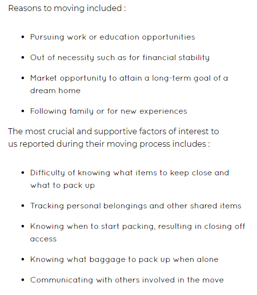
Our team identified the 3 possible stakeholders from our research and initial findings. We wanted to consider all moving stakeholders to be users of our application:
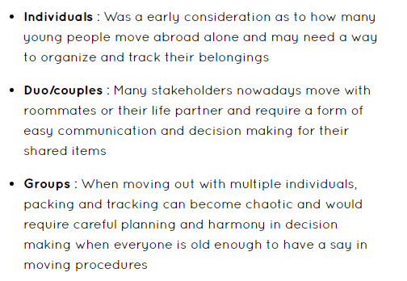
After gathering more research, we brainstormed possible features for the app where the main idea was built around the idea of decluttering and organization: camera feature to capture the item, swipe feature for voting to keep/discard (inspiration from Tinder), archive to revisit decisions/locations, and history.
Wireframe
We created a quick wireframe before the prototype:
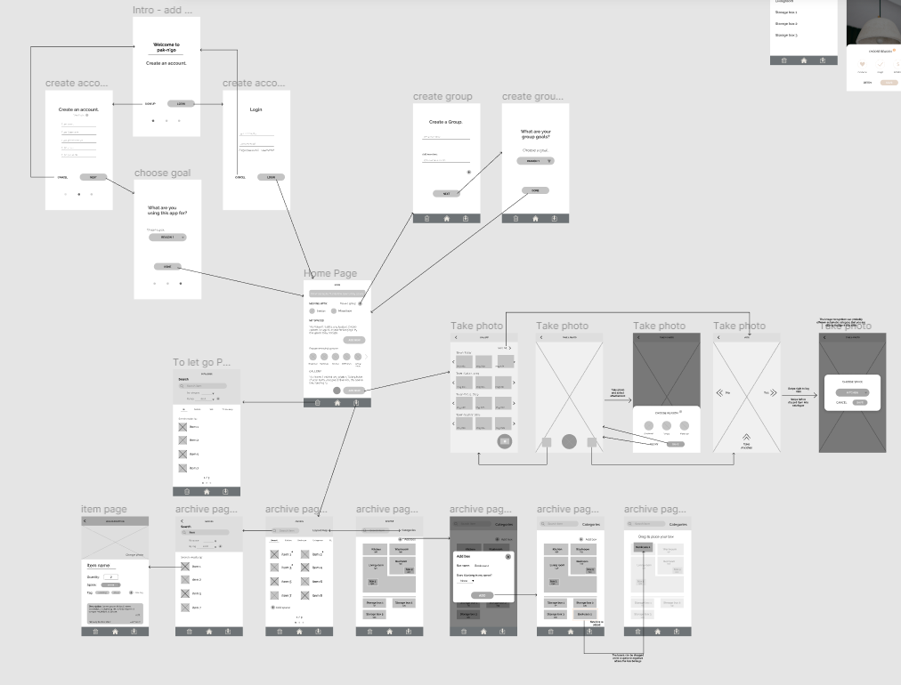
The first few iterations involved an overall incline towards helping users select their items through a mutual agreement before packing and sorting where each item would be placed. Then, allowing users to vote on items and create spaces to justify where they would be placed.
Initial Prototype
Then, we developed the task flow and the mock-up. We initially developed the feature with an assumption that the users will have a pre-set vision and ambition of a lifestyle they want to attain/maintain. The app is intended to help the users to justify what items will help make the envisioned lifestyle reality.
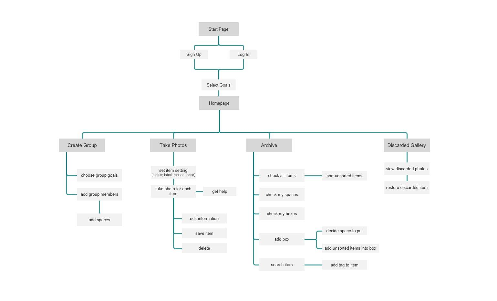
Kristina, Trisha, and I worked the screens (I also designed the icons/buttons). We wanted our interface to be simple and familiar, so we used universal icons for easier flow.
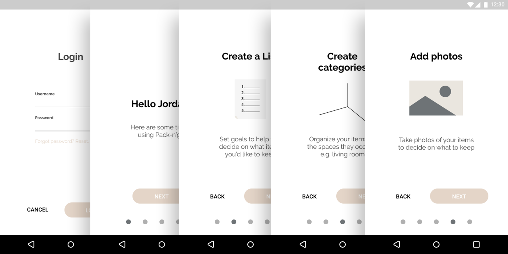
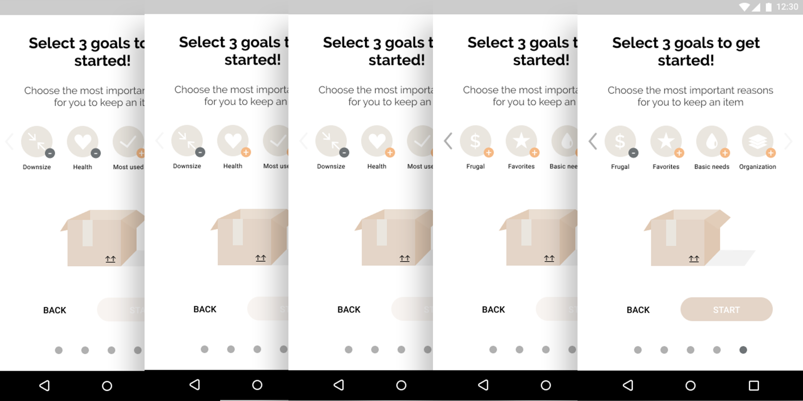
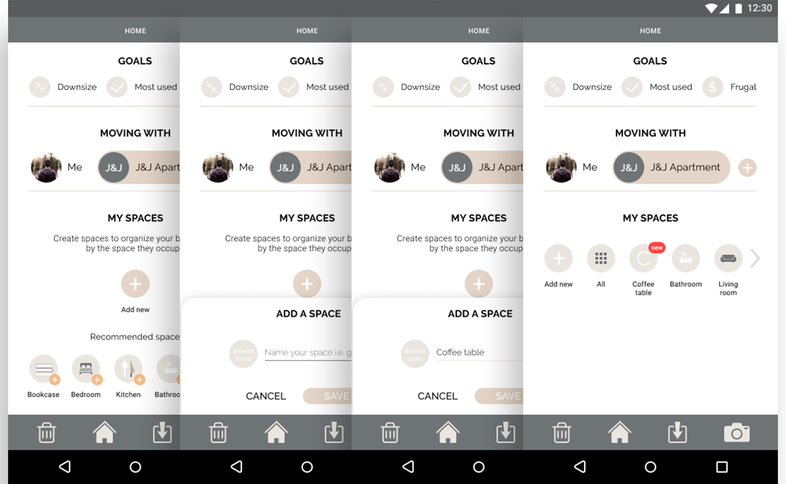
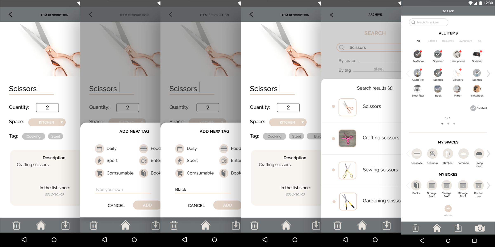
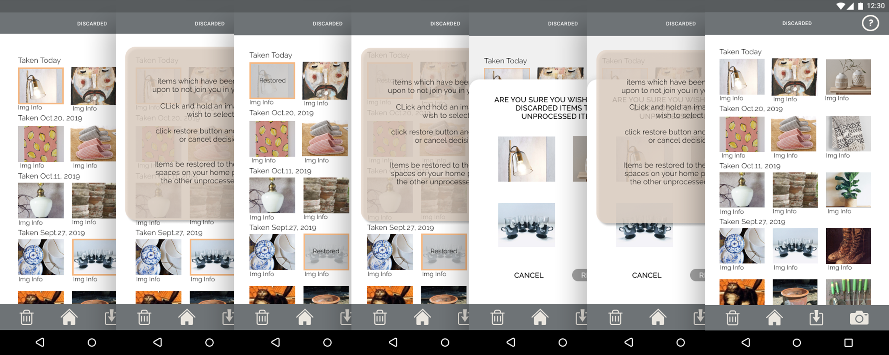
User Test
Once the screens were completed, we conducted a user test.Feedback received from A/B user testing (post-question survey/prototype trial) reflected a positive reaction to the apps concept, but the feature seemed weakly executed due to its confusing workflows:
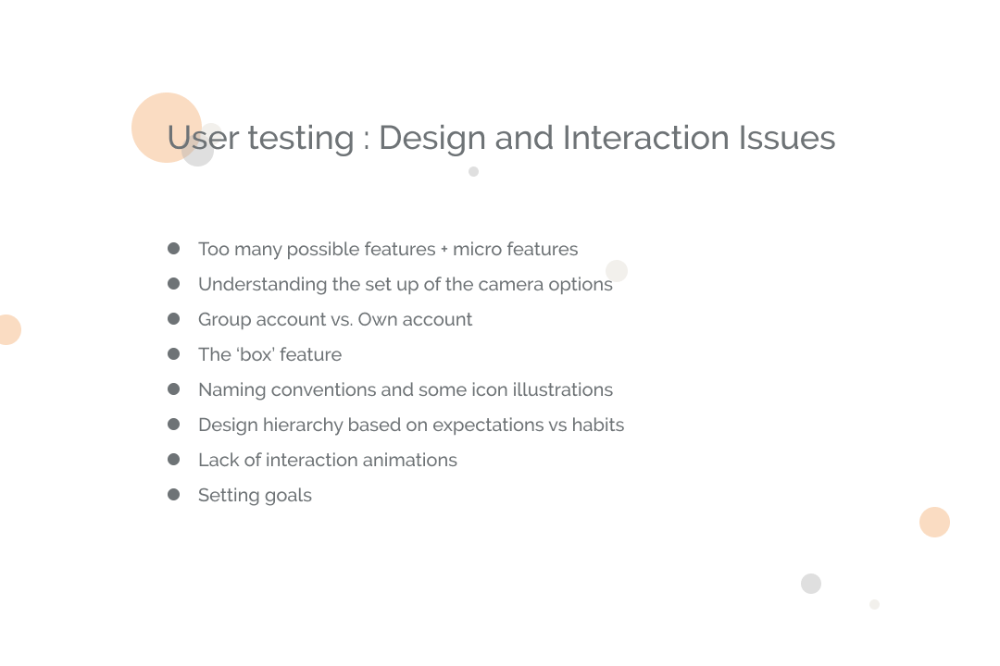
- Onboarding is too long due to excess number of inputs and user goal list creation
- Unclear labeling of elements resulted trial and error sessions to discover its use
- Customized camera settings caused user to hesitate due to non-instinctual responses to understand its function
- Group creations felt confusing when including individual use option
- Home space creation was useful but it caused users to use it as an item organizer instead of justification space to keep and discard items
- boxing of items was creative, but thought to take up more time than necessary to digitally arrange compared to physical arrangements (efficiency issues)
- Tinder function in the gallery is interesting (swiping of items to accept and decline)


As a result, we started by simplifying our application by narrowing the onboarding process, removing individual usage option (direct the app usage to groups) and focus solely on item selection feature. We decided to keep the sign-up/login feature to allow personal customization and to maintain privacy for any personal information inputed to the app.
Pivot
After the final evaluation, we made some major changes to the main feature of the app through feedback implementation and narrowing the target audience.
 The new workflow involved:
The new workflow involved:
- Optional onboarding tutorial – after signup users can decide to add/create groups
- Mandatory tutorial of group creations to access the features
- Justification process is revised to a keep or discard voting system and items are dictated by reason tags in the camera settings
- Camera design revised to use customization icons for settings


Final Design
Sign in + onboarding page

Before the home screen, the first-time users will go through a signup process with an option to add friends/create groups. Once the user signups or logins, the home screen pops up.

 *The sign up is required for the app as our feature requires user to add friends/groups as well as enter personal household items (by photo) to use the application.
*The sign up is required for the app as our feature requires user to add friends/groups as well as enter personal household items (by photo) to use the application.
Camera feature: Keep & Discard

This is the main feature; to help the user understand the function, the tutorial explains the important elements of the feature: the keep and discard tabs. The users are able to organize the items by capturing the product in the tab keep or discard.
- Discard: If the camera is set to discard, the user can choose one option between donate, sell, giveaway, or throw away. The captured images will be categorized based on the setting the user sets.
- Keep:If the camera is set to keep, the user is able to choose up to 3 reasons why they are keeping the items. Similar to discard, once the settings are set, the users can take photos within the pre-set category.


Gallery

The gallery holds all photos that have been already captured and categorized. The user who has added the photo has the authority to edit the settings which would otherwise be shared to the group to vote if the item should be kept or discarded.
 *Reached through homepage or from camera feature
*Reached through homepage or from camera feature
Vote/ Decision

The main interaction with this application involves decision making process to vote on items the users have inputted into their groups. When a group member adds an item, the group gets notified with an alert in the homepage. The users can enter ‘voted keep’ or the ‘voted discard’ tabs to view a gallery of items to vote: accept (swipe right), skip (swipe up), or decline (swipe left).
History

History page allows users to look back into their previous voting decisions and groups that they have completed with. It’s a summary of previous actions within the groups.
Reflection
Overall, I am quite satisfied with how far our team has come pushing through the struggles with the direction and feature scope before settling on the final concept. This course and project have given me the opportunity to learn many steps to creating an interface. Through user testing and weekly iterations, our team was able to develop the core feature of our app under the domain of lifestyle. Over the 8 weeks, all of use gained a better understanding of conducting user research, ideate, evaluate and collect information, create personas, design wireframes and mock-ups, and implement feedback to polish the iterations to achieve the final product.
In terms of personal skills, I was able to improve my interpersonal skills while working with new teammates and taking the lead, coordinating the workflow each week. Furthermore, this project gave me the opportunity to practice developing low-fidelity mock-ups, made ready for testing and then taking them up to high-fidelity level. It definitely gave insights to each stage of an interface creation and knowledge of user experience & testing, and ways to apply them.
Further Development:
After the final presentation, the main feedback we received was the overwhelming amount of information we provided as well as the confusion in the flow and familiarity of the feature breakdown. With more research in this area, I would love to take the application further to polish it up to clarify the flow of the feature and to focus towards a more general audience in terms of language. One alteration I would make is to simplify the voting feature to focus on the keep rather than having to go through extra steps with the discard function. Furthermore, to expand the discard feature, I would try to partner up with an organization to connect the users to help donate and sell the items.